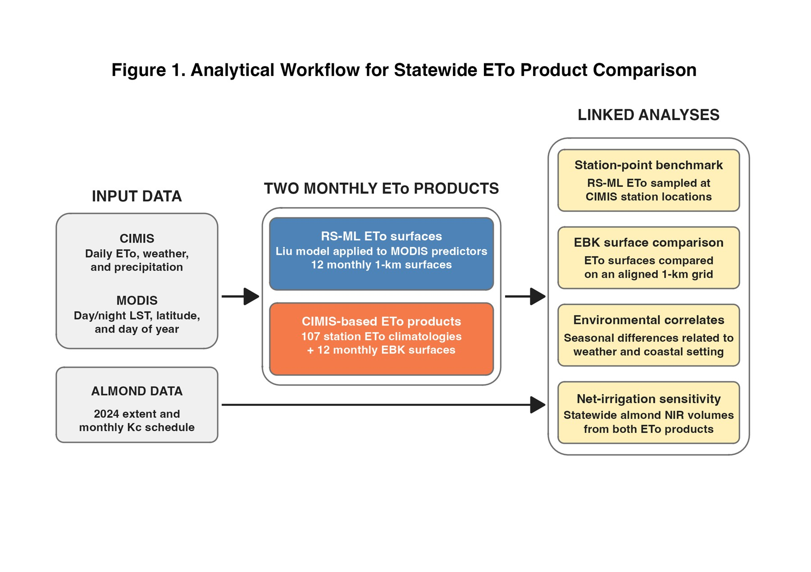

Can a satellite model stand in for weather stations?
My master's thesis tests where a remote sensing-informed machine learning model for reference evapotranspiration (ETo) agrees with California's weather-station network, and what the difference means for agricultural water accounting.
In progress · expected December 2026

Approach
- Built monthly statewide ETo surfaces from MODIS land surface temperature with a published random forest model.
- Interpolated 107 CIMIS stations into matching surfaces with Empirical Bayesian Kriging.
- Compared the two at stations and pixel by pixel, and tested which climate conditions explain where they differ.
- Ran an almond net-irrigation scenario to show what the choice of ETo product means for statewide water budgets.
Details
Thesis: Analyzing the Spatiotemporal Transferability of a Remote Sensing-Informed Machine Learning Model for ETo
Advisor: Dr. Yiwen Chiu · Funding: Agricultural Research Institute NextGen Fellowship
Tools
Results will be shared here after publication.
Where it started: a Salinas Valley pilot
Before scaling statewide, I tested the comparison in one watershed to shape the methods.